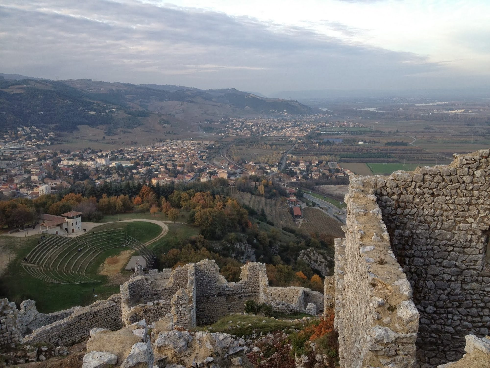

Op een rotsuitloper 250 meter boven het Rhônedal waakt het Château de Crussol sinds de 12e eeuw over de stad Valence, aan de overkant van de rivier. Dit beschermde historische monument is een van de meest iconische plekken aan de Ardèche-kant van de Rhône, op ongeveer 35 minuten van Les Cabritas.

Een burcht gebouwd om de Rhône te bewaken
Het kasteel werd in de 12e eeuw gebouwd om het verkeer door het Rhônedal in de gaten te houden. In de 15e eeuw verhuisde het dorp naar het dal van de Mialan, onder de vestingwerken. Aan het einde van de godsdienstoorlogen werd het gebouw grotendeels verwoest door katholieke troepen; sindsdien zijn de ruïnes en bijgebouwen gerestaureerd.
Een klim die beloond wordt met een uitzonderlijk uitzicht
Een wandelpad van ongeveer 30 minuten leidt naar de top, waar het dorp en de kasteelruïne het hele jaar gratis toegankelijk zijn. Bezoekers kunnen rondlopen op het terrein van 3 hectare, met een weids uitzicht over Valence, het Rhônedal en de eerste uitlopers van de Vercors. Er zijn ook het hele jaar door rondleidingen op reservering, gezinsworkshops en culturele evenementen.
Goed om te weten voor uw bezoek
Neem stevige schoenen mee voor de klim, en ook zonbescherming: de plek is erg open met weinig schaduw, vooral in de zomer. Het kasteel is perfect te combineren met een bezoek aan Valence, aan de overkant van de Rhône, voor een volle dag erfgoed en stadswandelen.
Praktische informatie vanuit Les Cabritas
- Afstand vanaf Flaviac: ongeveer 35 min rijden
- Beste periode: lente en herfst, om de grootste zomerhitte te vermijden
- Ideaal voor: makkelijke wandelingen, middeleeuws erfgoed, panoramisch uitzicht
Zin om het Château de Crussol te ontdekken vanuit uw vakantiehuis in de Ardèche?
Les Cabritas verwelkomt u in Flaviac, in het hart van de Ardèche, voor een comfortabel verblijf met privézwembad, vlak bij de mooiste plekken van de streek.
Beschikbaarheid bekijken